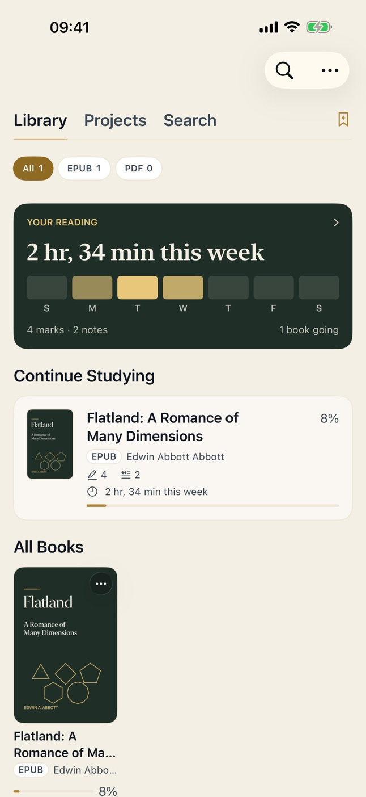
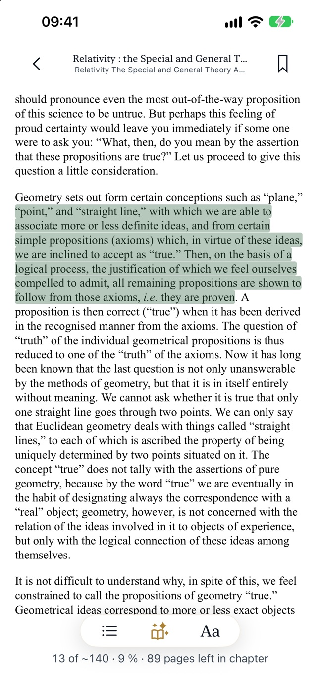
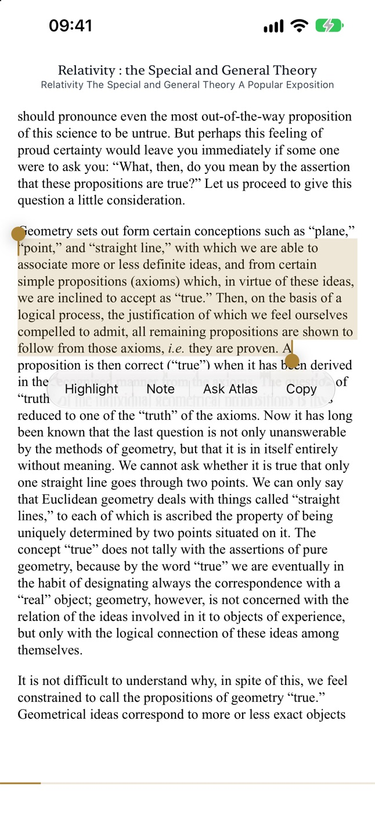
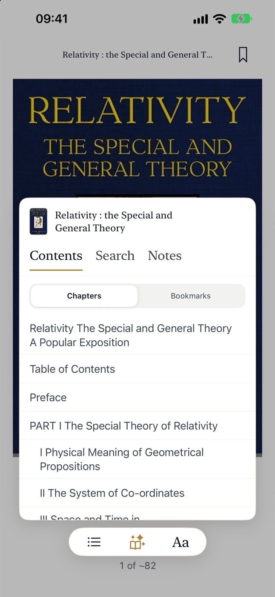

Your reading and knowledge, structured on the go.
An offline reader for technical books. Highlight what matters, give it a meaning, and study it with Atlas, all on your iPhone, even at thirty thousand feet.
- Works in airplane mode
- No account
- No tracking

Read
A calm page for dense books.
Open the PDFs, EPUBs and Markdown files you already own. The page stays quiet until you ask for more, and the app always knows how far you are in the chapter.

Capture
Highlight with intent, not just colour.
Every highlight belongs to a category you choose, so a definition, a doubt and a thing to remember never blur together. Add a note, or dictate one: speech is recognised on your iPhone.
- The exact passage is kept with every highlight
- Topics come from the book's own table of contents
- Export everything to Markdown, per book or the whole library

Find
Your notes, one tap from the page.
Contents, full-text search and your own notes share one panel. Gather books into a study project when a subject spans more than one of them.

Study with Atlas
A study partner that never leaves your phone.
Atlas runs on Apple's on-device model. Your questions and your books stay on your iPhone, and it works in airplane mode.
Ask about a passage
Select a sentence you don't follow and ask. Atlas answers with the passages it used, so you can check them.
Distill into a note
Take a good conversation into your notes: the passage, your own thoughts and a short summary from Atlas.
Improve your writing
Atlas suggests a clearer version of what you wrote. Nothing changes until you keep it.
Atlas needs an iPhone with Apple Intelligence. It can make mistakes, so check what matters against the book.
Pricing
The reader is free. Atlas is yours for good.
Reader
Free
- PDF, EPUB and Markdown
- Highlights, notes, topics and search
- Study projects and Markdown export
Atlas Lifetime
One purchase, no subscription
- Try it ten times for free
- Ask, Distill and Improve without limits
- Restore it on a new iPhone
Privacy
Nothing leaves your iPhone.
No account, no analytics, no ads. Your books, highlights, notes and questions never reach us, because the app has nowhere to send them.
Read the privacy policy